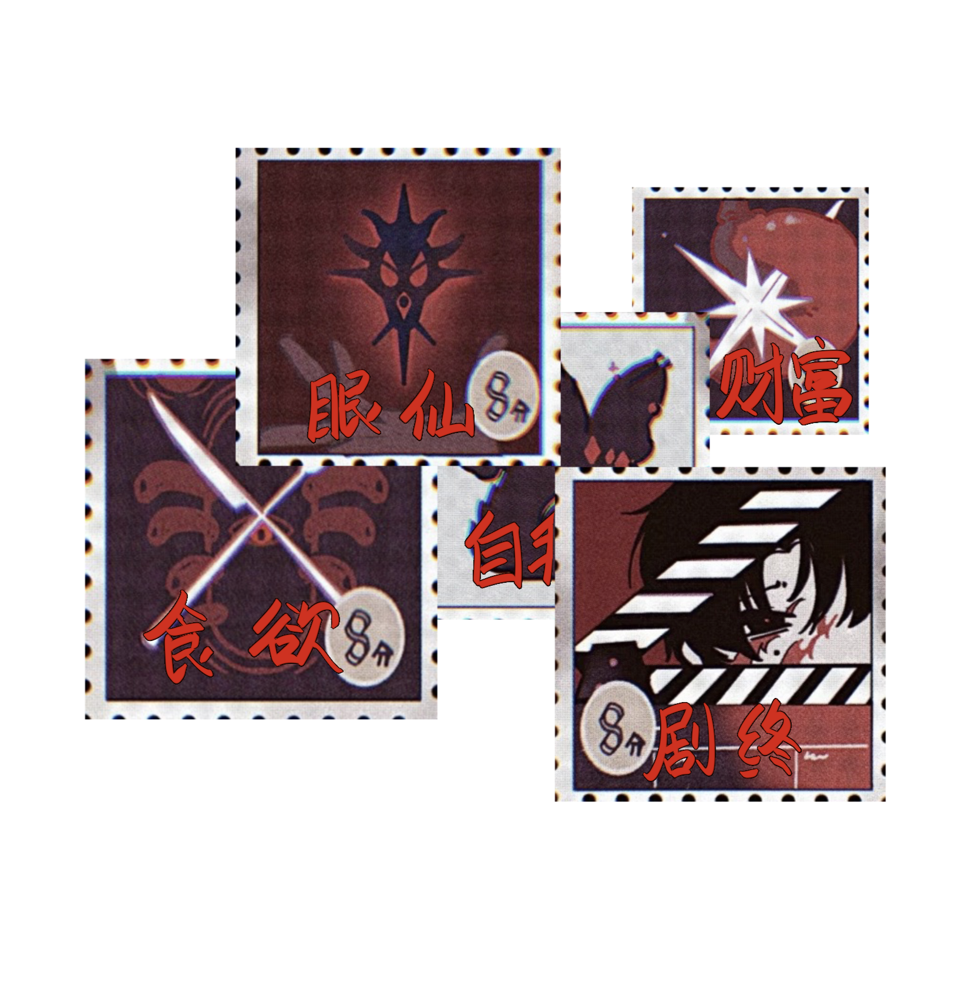

身份信息
- 姓名：朱耀星
- 职业：福田百货老板/替死鬼/？？？/昊漠星
- 头七论坛id: 星星
关键经历
- 童年：被朱老板收养当替死鬼，常被骂"饿死鬼转世"；有密不透风红房间
- 成长：设计让原本朱耀星死去，反杀朱老板；靠眼仙致富后又破产
- 结局：点燃福田百货，自焚成为地缚灵
特殊元素
- 项链：母亲捡的烧焦石头，藏于新项链瞳孔处
- 象征：红房间、流星碎片（烧焦石头）、眼仙、鬼王面燃大士
性格与观念
- 对财富认知模糊，以食物为财富象征
- 精神上自我认知极低